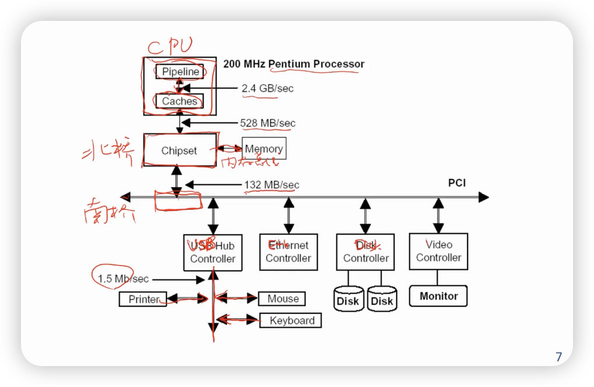

Io
计算机运行机制¶
- CPU：Control和Datapath
- 存储：Memory
- HDD，SSD其实属于外设的部分

I/O作用和功能¶
- 与计算机外部交换信息的通道：
- 键盘、显示器、打印机、鼠标
- 语音、图像、图形等多媒体数据（扫描仪、DC）
- 计算机网络
- I/O设备
- 种类繁多，功能繁杂，速度不一
要解决的问题¶
- 控制方式
- CPU如何控制输入/输出？
- 传输方式
- 传输通道、方式、速率等（总线、接口）
- 数据识别和转换
- 数/模转换、语音识别等，转换为字符、数据等计算机能识别的格式（设备）
输入输出方式¶
- 程序直接控制
- CPU直接使用输入/输出指令来控制外部设备
- 程序中断
- 外部设备请求，CPU响应，CPU与外设并行工作
- 直接存储访问（DMA）
- 专用输入/输出控制器
- 通道
- 外围处理机
程序直接控制¶
READ_SERIAL: // 读串口：将读到的数据写入a0低八位
li t0, COM1
.TESTR:
lb t1, %lo(COM_LSR_OFFSET)(t0)
andi t1, t1, COM_LSR_DR
bne t1, zero, .RSERIAL
j .TESTR
.RSERIAL:
lb a0, %lo(COM_RBR_OFFSET)(t0)
jr ra
- LSR: Line Status Register
- RBR: Receive Buffer Register
- 这种方式叫做MMIO (Memory-Mapped IO)
- CPU方：2. 查询接口状态（循环等待），4. 直到接口接收到该字符，读字符
- 外设方：1. 往接口数据缓冲中送字符。3. 处理完后，置状态寄存器，等待下一个字符
- 特点：
- 成本低，效率低
- 严重占用CPU资源
- CPU得不断轮训 (Polling)
- 适用情况：早期计算机中高速设备
程序中断方式¶
- CPU和外部设备同时工作
- 外部设备发起请求
- CPU暂停正在执行的程序，进行响应
- 处理完成后，继续执行原来的程序
- 提高CPU的效率
- 可以同时管理多个外部设备
中断的一些概念¶
- 中断源
- 外中断：I/O设备等
- 异常（内中断）：处理器硬件故障、程序“出错”，Trap
- 中断触发器
- 中断状态寄存器
- 中断优先级
- 响应中断的顺序
- 禁止中断与中断屏蔽
- 中断允许触发器（EI、DI）
- MIE (interrupt enable，允不允许中断) 和MIP (interrupt pending，有没有中断)
- 有选择封锁
- 中断允许触发器（EI、DI）
中断的完整过程¶
- 中断请求
- 中断源设备设置中断触发器
- 每个中断源有一个中断触发器 (MIP)
- 同时可设置一个中断屏蔽触发器 (MIE)
- 中断源设备设置中断触发器
- 中断响应
- 响应条件
- 允许中断、当前指令结束、优先级
- 响应实现
- 硬件实现的中断隐指令，保存断点 (上下文context，通用寄存器)
- 响应条件
- 中断处理
- 保存现场信息
- 运行中断服务程序
- 中断返回
- 三件事
- 有些时候是不能中断的（保存上下文，恢复上下文）
- 可以中断嵌套
- 软件和硬件
- 关中断/开中断：硬件
- 保存/恢复上下文：软件
- mtvec：软件/硬件都可以
中断设备接口组成¶
- 中断请求寄存器（MIP）
- 中断屏蔽寄存器（MIE）
- 优先级排队线路
- 数据缓冲寄存器（从其他设备来的数据）
- 中断控制和工作状态逻辑
- 设备选择器
- 中断向量表
特点¶
- 适用情况
- 传输速度不高
- 传输量不大
- 对CPU干扰较大
- 但已经比polling要低了
直接存储访问（DMA, Direct Memory Access）¶
- I/O设备和主存储器之间的直接数据通路，为专设的硬件，用于高速I/O设备和主存储器之间成组传送数据
- 数据传输过程由DMA自行控制
- 主存储器需要支持成组传送
- 数据传送开始前和结束后通过程序或中断方式对DMA进行预处理和后处理
- 注：DMA还是需要前面说到的程序/中断方式
- ADR：address，I/O设备上的
- DBR：Data Buffer Register
- WC：word count
- MAR：memory address register，总线（主存）上的
- CSR：Control and Status Register
DMA方式的问题¶
- 虚拟地址和实地址
- DMA采用实地址：虚拟地址连续，但实地址（可能）不连续
- 这样需要进行多次的DMA访问
- 采用虚拟地址：DMA来进行虚实地址的转换
- 需要自己维护一个页表
- DMA采用实地址：虚拟地址连续，但实地址（可能）不连续
- Cache一致性
- 主存中的数据可能不是最新的（没太懂）
- 采用直接写（写入主存？）会带来性能的降低
- DMA查询Cache，降低性能
- 直接设计硬件控制
- 主存中的数据可能不是最新的（没太懂）
DMA使用内存总线的方式¶
- 独占使用：当外设要求传送一批数据时，由DMA控制器发一个信号给CPU。DMA控制器获得总线控制权后，开始进行数据传送。一批数据传送完毕后，DMA控制器通知CPU可以使用内存，并把总线控制权还给CPU。
- 周期挪用（窃取）：当I/O设备没有DMA请求时，CPU按程序要求访问内存：一旦I/O设备有DMA请求，则I/O设备挪用一个或几个周期（一旦冲突，DMA优先）（时分复用）
- 交替访问：一个CPU周期分为2个周期
特点¶
- 与设备一对一服务
- 多DMA控制器可能发生冲突
- 对CPU打扰适中
- 初始化，周期挪用
- 无法使用大量高速设备的管理
- 网络，SSD
通道控制方式¶
- IOP：I/O Processing
- 和DPU（Data Processing Unit）有点像
- 功能：
- 根据CPU要求选择某一指定外设与系统相连，向该外设发出操作命令，进行初始化
- 指出外设读/写信息的位置以及与外设交换信息的主存缓冲区地址
- 控制外设与主存之间的数据交换
- 指定数据传送结束时的操作内容，检查外设的状态
外围处理机¶
- 已经超出一台计算机的范围了，可以看成集群里的另一个设备
- 通道型处理机
- 共享内存
- 外围处理机
- 通用计算机
- 独立完成输入/输出功能
- 通过通道方式与主机进行交互
总结¶
如何设计输入/输出系统？¶
- 性能
- 考虑吞吐量和延迟
- 适应各种不同类别的设备的性能的差异
- 操作系统、驱动程序等多方面综合考虑
- 可扩展性
- 允许更多设备接入到输入/输出系统（总线）
- 可适应性
- 设备有无
- 热插拔
- 设备故障
作者: